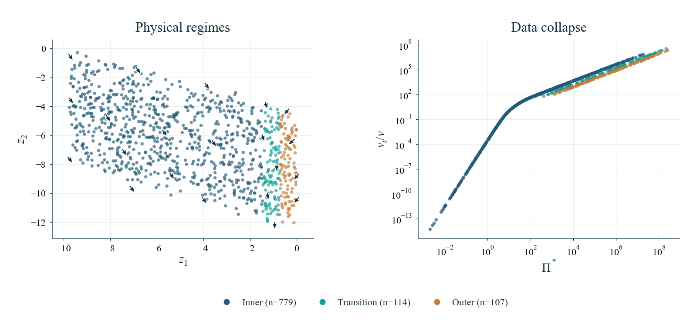

Cess eddy-viscosity model in turbulent channel flows

Numerical results
| Scope | Samples | Groups | MI | ε | Test R² |
|---|---|---|---|---|---|
| Regime 0 | 107 | 1 | 2.108 | 0.121 | 1.000 |
| Regime 1 | 114 | 1 | 2.396 | 0.091 | 1.000 |
| Regime 2 | 779 | 1 | 3.427 | 0.032 | 1.000 |
Selected relations
Regime 0
Input 1(u_tau · h) / (nu)
Outputnu_t/nu
Regime 1
Input 1(u_tau · h0.42529 · y0.57471) / (nu)
Outputnu_t/nu
Regime 2
Input 1(u_tau · y) / (nu)
Outputnu_t/nu